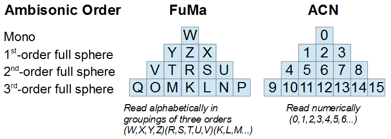
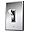

Table of Contents
2019.2.5.7349
2019.1.9.7221
2018.1.11.6987
2017.2.10.6745
2017.1.9.6501
2016.2.6.6153
2016.1.6 build 5926
2015.1.9 build 5624
The two primary component ordering formats for ambisonics are Furse-Malham, commonly called FuMa, and Ambisonics Channel Number, commonly called ACN. As seen in the following image, the former uses a lettered notation that - following alphabetical order per grouping - starts with the W (omni) channel, moves to its lower right, then its lower left, and then its lower center; then it moves to the next order and starts at the R, moves to its right, then to its left, then the further right, then the further left; then it moves to the next order and follows a similar pattern. On the other hand, the latter is numbered in a much easier to follow left-to-right order.
From the mono top block to the 1st, 2nd, and 3rd order bases, the image also illustrates that each ambisonic order can be viewed as a pyramid with respectively 4, 9, and 16 channels.
|  |
The ambisonic file's ordering may be different within Wwise than its initial import or possible export. By default, Wwise expects imported ambisonic files of 1st order to 3rd order to use FuMa ordering, while higher order ambisonics are always interpreted as AmbiX, which uses ACN ordering.
|  | Tip |
|---|---|
You can change how Wwise interprets a file's channels by using the Channel Configuration Override in the Source Editor. |
Wwise converts FuMa ordering to the newer ACN ordering with SN3D normalization. However, it keeps FuMa lettering up to the third order. That is, in the preceding image, the FuMa ordering would be read from left to right, corresponding to W Y Z X V T R S U Q O M K L N P. Meters and the graph view of the authoring tool's Source Editor use this hybrid display of ACN ordering.
This also means that development of custom plug-ins works with the Wwise-converted ACN ordering. Files recorded with the Wwise Recorder plug-in on an ambisonics-enabled bus can use FuMa ordering (thereby producing files that can be imported into Wwise) or ACN ordering. This is determined by the Ambisonic Channel Ordering option.